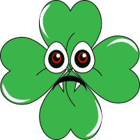
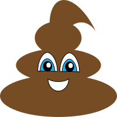
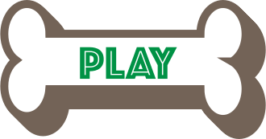
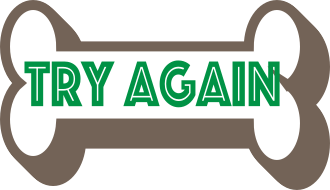
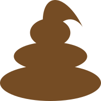
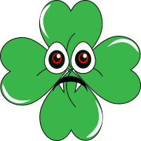
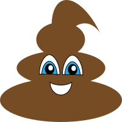
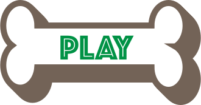
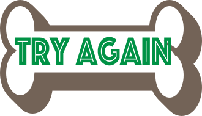
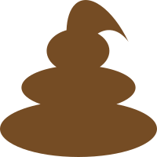

Tema 4 - Animation
På dette tema har der været fokus på programmering - heriblandt vha. javascript. Vi har arbejdet med
animationer af forskellig art, og arbejdet med illustrationer i Adobe Illustrator.
For at lære at programmere, har vi udarbejdet et animeret spil fra bunden af. Dette indebærer både
aktivitets-ogstatemachine-diagrammer, UI-elementer, figurelementer,baggrundsdesign og
kompositionsteknikker.
Mit spil tog udgangspunkt i mine færdigheder i Adobe Illustrator - dette havde jeg ingen erfaring
med, og det blev derfor et simpelt spil med en målgruppe tilegnet børn og barnlige sjæle. Nedenfor
ses min spil-side med mit bud på animationsspillet - "Dog Parent Duty".


 








